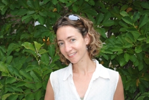

Lara Kaye, Ph D.
Research Scientist and Assistant Research Professor
E-mail: lkaye@albany.edu
Telephone: (518) 591-8615
Specialization: Evaluation and Research in
Human Services
Projects:
Addressing and Assessing the Need for Child Psychiatrists in New York State: A Needs Assessment
Evaluation of New York’s AmeriCorps Generation Initiative
Family Assessment Response Evaluation
Kinship Navigator County Collaboration Project Evaluation
Legally Exempt Child Care
NYC Anti-Violence Project Capacity Building Initiative
Preventive Contracts Consistent with County Outcomes
A Study of Legally Exempt Child Care in Albany County
Understanding Barriers to Obtaining Food Stamps
Understanding Parent Engagement to Enhance Mentoring Outcomes
Lara Kaye is currently CHSR project lead on the evaluation of the Kinship Navigator County Collaboration Project and on Understanding Parent Engagement to Enhance Mentoring Outcomes. Her research portfolio includes studies on legally exempt child care, family assessment response, barriers to food stamps, and the need for child psychiatric services. Her research has spanned the areas of health, behavioral health, education, public health, social work and psychology. She is skilled at quantitative and qualitative analysis. She has written and received grants, developed and presented trainings, published in peer-reviewed journals, and presented at national and international conferences.
Lara received her Bachelor’s degree in Political Science from Binghamton University, SUNY. She completed her MSW at Hunter College and her Ph.D. in Social Welfare at the University at Albany, SUNY. She completed a Postdoctoral Fellowship in Clinical Services Training Research at the University of California, San Francisco.
CHSR Featured Staff Member, May 2014
Dr. Kaye received the Terra Award, which recognizes innovation and initiative with regards to promoting sustainability at the University at Albany.
An excerpt from Lara's nomination:
"Although Lara models sustainability in her personal actions, her greatest strength lies in her ability to communicate with others about concrete, meaningful steps they can take to lower their impact on the earth’s resources. Lara’s gentle, persistent communication style gets results! She is skillful in translating larger sustainable principles into concrete steps that others can easily take."
Lara heads the CHSR Green Committee which serves to engage the staff around sustainable practices and to increase environmentally friendly operations on the downtown campus. This is accomplished through identifying areas of need related to green issues, and then collaboration, outreach and education. Read the announcement of Lara's exceptional achievement in the April 2014 edition of the Sustainability Bulletin:
{kind=link}